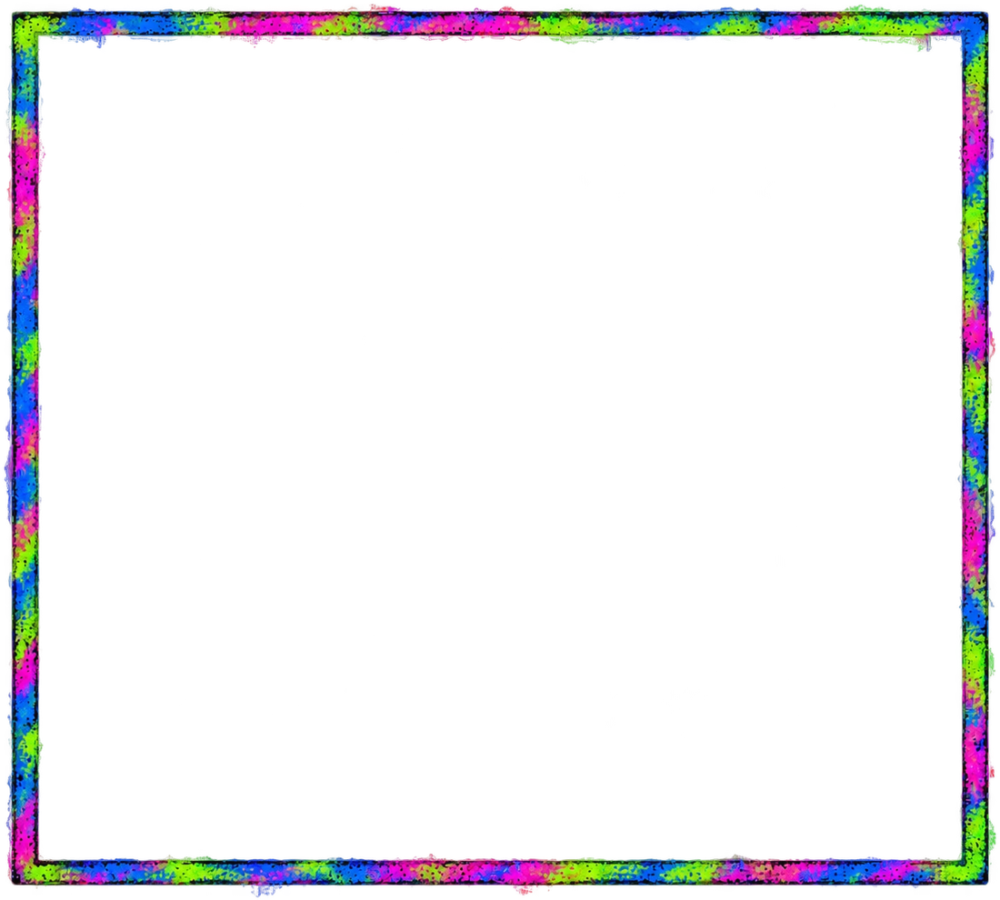

Draws come from the optimized 96.5% RTP lookup tables — the real math.
$0.00
—


Malfunction voids all wins and plays. A consistent internet connection is required. In the event of a disconnection, reload the game to finish any uncompleted rounds. The expected return is calculated over many plays. The game display is not representative of any physical device and is for illustrative purposes only. Winnings are settled according to the amount received from the Remote Game Server and not from events within the web browser. TM and © 2026 Engine.
Loading the round…